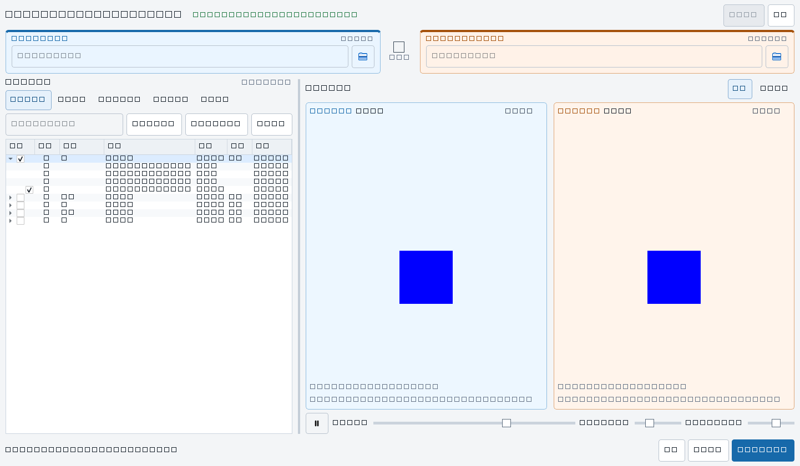

核心结论
保留双动画并排预览，但取消两棵重复文件树。左侧改为一张可直接勾选的动作差异清单，右侧固定显示“来源 / 目标”动画对比，底部只保留本次传输摘要与主操作。动作目录默认聚合显示，帧文件按需展开。
不再依赖“左 / 右”记忆
全程使用“来源：新动作目录 → 目标：SVN”，预览标题和状态文案保持一致。
差异再多也先看动作
主清单每个动作只占一行，几十帧或数百帧被聚合为数量与大小，需要时再展开。
单独或批量更新更直接
搜索、单行勾选、Ctrl/Shift 多选和批量勾选都在同一块清单中，选择范围在底部实时汇总。
现状诊断

版面
- 默认窗口只有 600 px 宽，两棵包含“名称 / 大小 / 状态”的树继续均分宽度，长名称和角色信息都容易被压缩。
- 动作筛选、传输按钮、两条进度条位于树和预览之间，把最重要的文件浏览与动画对比分隔开。
- 预览画布自身需要较大高度，单列堆叠让动作列表可见行数不足。
选择逻辑
- 树的当前行决定预览，独立复选框决定传输，用户必须跨区域确认两种状态。
- 全不选之后，树仍可能重新显示全部动作，但实际传输范围为空，容易产生误判。
- 传输层按多个差异节点递归收集再去重，无法在主界面明确表达动作内的文件级排除。
信息语义
- “仅左侧 / 仅右侧”描述的是布局，不是“新增待传 / 目标独有”这种任务结果。
- 来源与目标只在局部标题中出现，缺少持续可见的单向传输提示。
可交互新版原型：搜索 `idle`、切换状态、选择动作、展开帧文件并观察底部汇总。
推荐桌面尺寸 1440 × 900 · 最小 1100 × 720
来源｜新动作目录只读
D:/Animation/Export/Player
→复制到
目标｜SVN 工作目录将覆盖
D:/SVN/Game/Assets/Player
同步动画对比
来源｜新动作idle
来源帧 18 / 48
目标｜SVNidle
目标帧 18 / 45
18 / 48
缩放 100%Y 位移 +50
重构后实际运行界面
以下截图由 PySide6 6.11.1 在 1442 × 842 窗口中实际渲染，包含固定的选择/方向/目录/动作列、Ctrl/Shift 多行高亮、批量文件选择和同步双预览。

单独更新 idle 的目标流程
1. 搜索输入 idle，清单只保留匹配动作
2. 校对单击该行，右侧同步加载双预览
3. 选择勾选动作，或批量勾选高亮行
4. 确认核对动作、文件数和总大小
5. 传输预览最终清单后复制到 SVN
实施计划
以下四个阶段已在本地工作区完成首轮实现；该原型继续作为版面与交互验收基准。
| 阶段 | 主要改动 | 验收重点 |
|---|---|---|
| 1. 模型 | 建立动作级差异模型、独立选择集合、精确文件任务生成。 | 筛选不改变选择；同一文件不会重复进入任务。 |
| 2. 布局 | 来源/目标栏、单动作清单、QSplitter、底部摘要栏。 | 1440 × 900 可见至少 18 个动作行和完整双预览。 |
| 3. 预览与确认 | 共享播放进度、帧数映射、可排除文件的传输预览。 | 双侧始终可比较，确认清单与实际传输完全一致。 |
| 4. 性能 | 文件行懒加载、代理模型筛选、界面状态记忆。 | 数百动作和数万帧下仍可流畅搜索、展开和勾选。 |